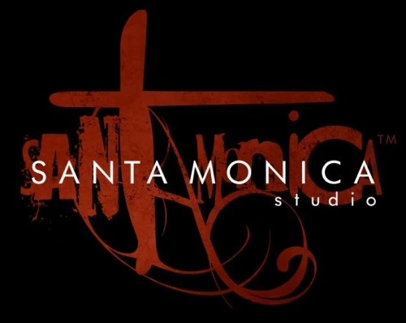

Sobre god of war

A Santa Monica Studio é a desenvolvedora da famosa série de videojogos God of War(uma das se não a maior franquia de jogos de todos os tempos). A história da Santa Monica Studio começou em 1999, e eles são conhecidos pela sua participação em vários jogos da série, incluindo o original de 2005, Ascension, God of War (2018) e God of War Ragnarök.
Detalhes da Santa Monica Studio:
Fundação: A empresa foi fundada em 1999 por Allan Becker e, desde então, tem crescido e transformado-se numa divisão da Sony Interactive Entertainment, integrando os PlayStation Studios.
Sede: A sua sede está localizada em Los Angeles, na Califórnia.
Contribuição para a Série God of War: A Santa Monica Studio é a força criativa e técnica por trás da maioria dos jogos da franquia God of War, sendo responsável pela criação de sete jogos na série.
Colaborações: Além da sua produção principal, a Santa Monica Studio também colaborou com outros estúdios menores, como Thatgamecompany e Giant Sparrow, na produção de outros jogos.
Destaques dos Jogos da Santa Monica Studio:
God of War (2005): O lançamento original que deu início à saga de Kratos.
God of War: Ascension: O jogo que trouxe novas mecânicas de combate e um sistema de tempo.
God of War (2018): Um reinício da série, que introduziu um novo enredo baseado na mitologia nórdica e que se focou na relação entre Kratos e o seu filho, Atreus.
God of War Ragnarök: A continuação do jogo de 2018, que acompanha Kratos e Atreus na sua busca por respostas antes da chegada do Ragnarök. Com cada um tendo mecanicas diferente e historias que se completam mas sempre de jeitos diferentes, como Kratos o Protagonista dessa historia apresenta quando se luta contra os Deuses.